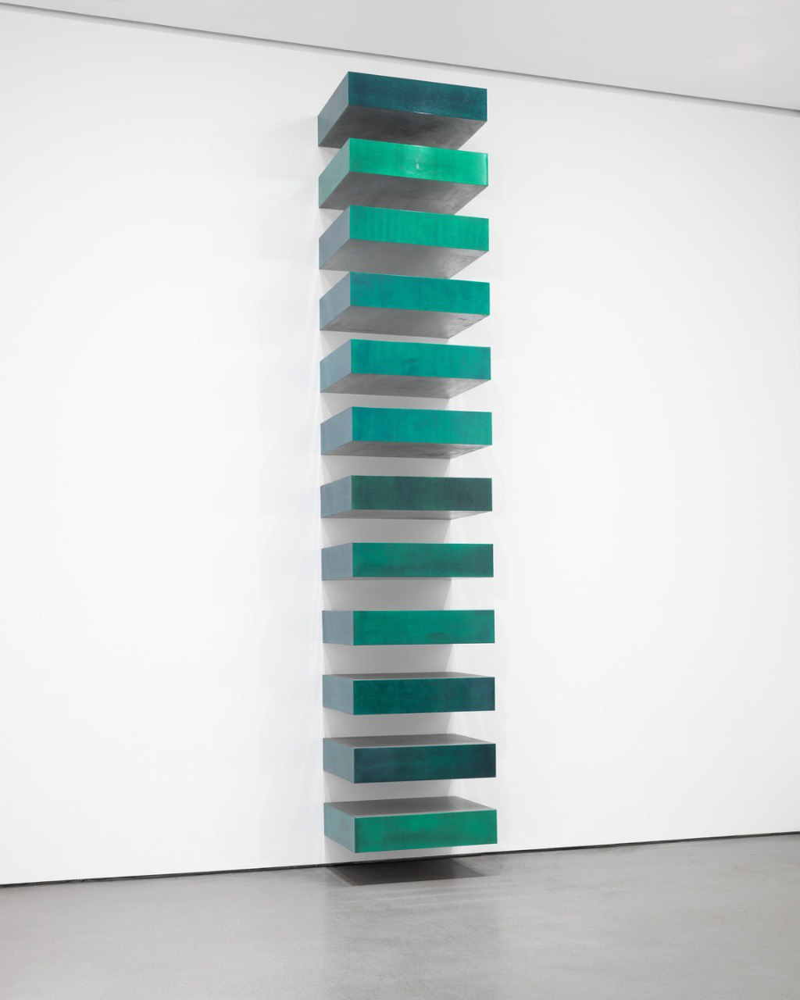
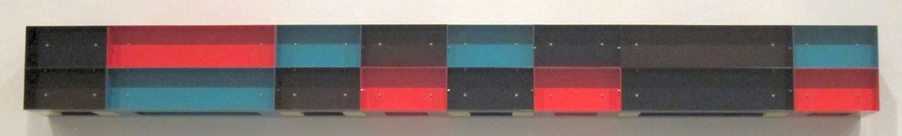
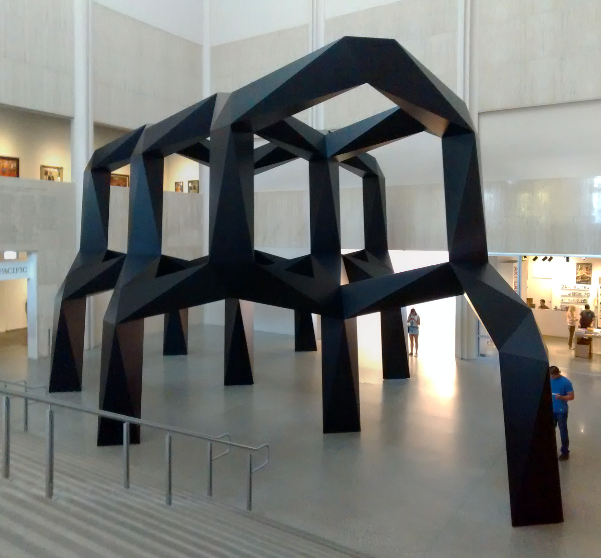
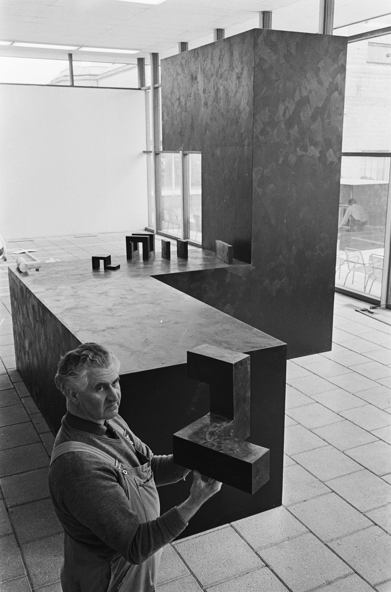
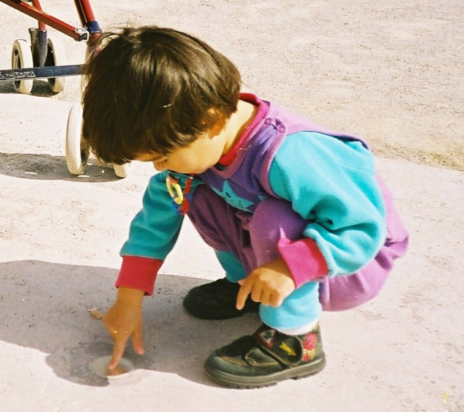
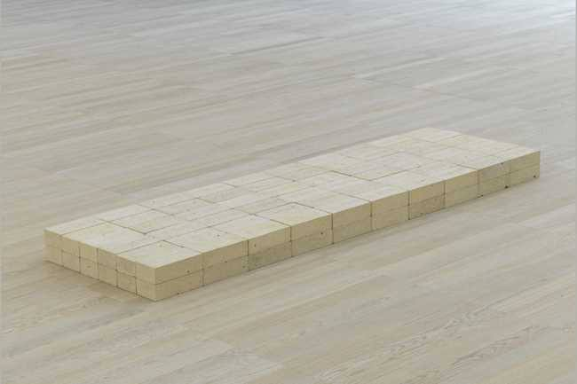
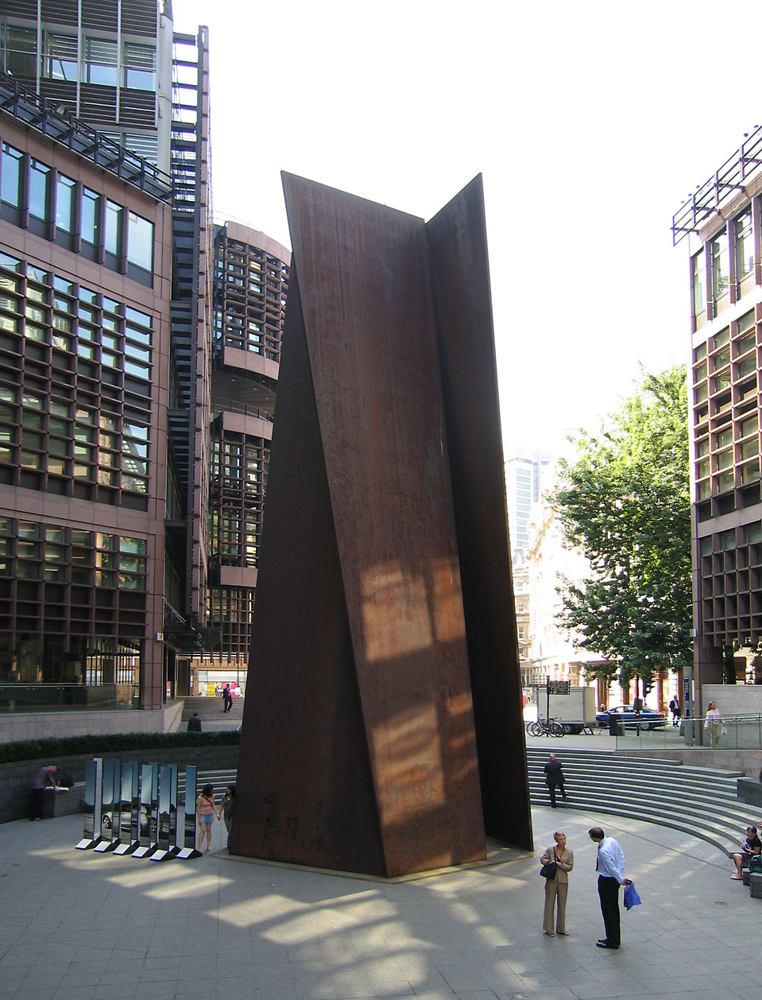
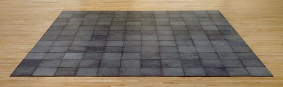
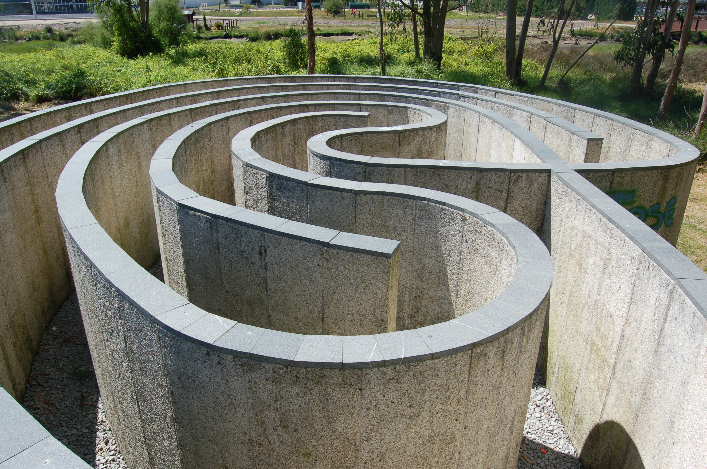
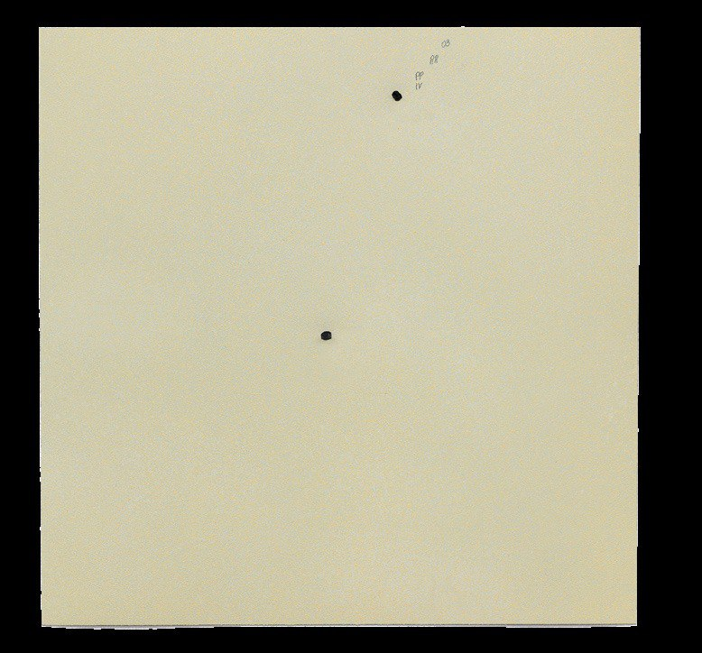

Meesterwerk: Untitled (Stack)
Donald Judd, 1967

🎨 TIEN MEESTERWERKEN - GEDETAILLEERDE ANALYSE
1. "Untitled (Stack)" (1967) — Donald Judd
Verschillende collecties | 10 dozen van 9 × 40 × 31 inch | Geanodiseerd aluminium
Achtergrond
Judd's meest iconische "specific object". Tien identieke dozen gestapeld van vloer tot plafond, met gelijke afstanden ertussen.
Stijlanalyse
Serialiteit: Identieke eenheden in serie. Geen begin of eind, geen compositorisch centrum.
Ruimtelijke relatie: Het werk bezet de verticale ruimte. De wand wordt onderdeel van het werk.
Materialiteit: Glanzend aluminium, industriële perfectie. Geen penseelstreken, geen spoor van de maker.
2. "Untitled" (1985) — Donald Judd
Tate Modern, Londen | Geschilderd aluminium

Achtergrond
Een typisch voorbeeld van Judd's "specific objects" - een stapeling van identieke aluminium boxen die de grens tussen schilderkunst en beeldhouwkunst uitdagen.
Stijlanalyse
Serialiteit: Herhaling van identieke eenheden creëert een ritme zonder traditionele compositie.
Materialiteit: Geanodiseerd aluminium met een diepe, roodachtige kleur - industrieel en tegelijkertijd esthetisch.
Ruimte: De boxen projecteren zich in de ruimte, de wand wordt onderdeel van het werk.
3. "Smoke" (1967) — Tony Smith
LACMA, Los Angeles | Staal

Achtergrond
Een monumentaal werk dat de grenzen van perceptie en ruimtelijke ervaring onderzoekt. Smoke toont Smith's fascinatie voor geometrische complexiteit.
Stijlanalyse
Schaal: Monumentaal formaat dat de toeschouwer omvat en de ruimte transformeert.
Geometrie: Complexe samenstelling van eenvoudige geometrische vormen - typisch voor Smith's benadering.
Materiaal: Zwarte staalconstructie die zowel industrieel als organisch aanvoelt.
4. "Cubes" (1967) — Tony Smith
Haags Gemeentemuseum | Aluminium

Achtergrond
Smith's exploratie van de kubus als fundamentele bouwsteen van ruimtelijke ervaring. Deze werken tonen zijn obsessie met pure geometrische vorm.
Stijlanalyse
Serialiteit: Meerdere kubussen in een systematische opstelling creëren een veld van visuele spanning.
Monumentaliteit: Hoewel de elementen eenvoudig zijn, creëert de schaal een overweldigende ervaring.
Oppervlakte: Geanodiseerd aluminium met subtiele kleurvariaties - het materiaal spreekt voor zich.
5. "Vertical Earth Kilometer" (1977) — Walter De Maria
Kassel, Duitsland | 1 kilometer messing staaf in de grond

Achtergrond
Een kilometer lange messing staaf die verticaal in de aarde is gedreven, met alleen het bovenste oppervlak zichtbaar. Een radicale conceptualisatie van schaal en aanwezigheid.
Stijlanalyse
Conceptueel: Het werk bestaat voornamelijk in de geest - we zien alleen het topje van een enorme constructie.
Schaal: De menselijke maat wordt volledig overstegen door een verticale kilometer.
Minimaliteit: Een enkel vlak oppervlak vertegenwoordigt een enorme ondergrondse structuur.
6. "Equivalent VIII" (1966) — Carl Andre
Tate Modern, Londen | 120 vuursteen tegels | 2 tegels hoog

Achtergrond
Een van de meest beroemde en controversiële minimalistische werken. 120 vuursteen tegels in een rechthoek op de vloer. Het werk veroorzaakte een schandaal in 1976 toen de Tate het kocht voor £2,297 - "maar een stapel stenen!" riepen de kranten.
Stijlanalyse
Horizontaal: Het werk ligt op de vloer - geen sokkel, geen verheffing. De kijker kijkt erop neer, of loopt eromheen.
Equivalentie: Alle tegels zijn equivalent - geen hiërarchie, geen compositie. Het is een democratie van vormen.
Materiaal: Vuursteen - een oer-Nederlands materiaal, gevonden in de velden. Andre gebruikte wat er al was.
Controversie: Het werk daagt de definitie van kunst uit. Is dit kunst? Wie bepaalt dat? Het is minimalisme in zijn meest radicale vorm.
7. "Fulcrum" (1987) — Richard Serra
Broadgate, Londen | 16.8 meter hoog | Weathering steel

Achtergrond
Een monumentaal staalwerk dat de kracht van materiaal en vorm demonstreert. Fulcrum toont Serra's meesterlijke beheersing van cortenstaal en zijn vermogen om massieve structuren te creëren die toch een gevoel van lichtheid uitstralen.
Stijlanalyse
Materialiteit: Cortenstaal dat roest tot een beschermende patina - het materiaal is de boodschap.
Schaal: 55 voet hoog, een overweldigende aanwezigheid die de toeschouwer omvat.
Evenwicht: De titel "Fulcrum" (draaipunt) verwijst naar de precaire balans van de staalplaten.
8. "144 Magnesium Square" (1969) — Carl Andre
Tate Modern, Londen | 144 magnesium platen | 365 × 365 cm

Achtergrond
Een grid van 144 identieke magnesium platen die direct op de vloer worden geplaatst. Het werk is niet vastgehecht aan de vloer; de zwaartekracht is het enige dat het op zijn plaats houdt. Dit is Andre's "Equivalent VIII"-concept in een ander materiaal.
Stijlanalyse
Serialiteit: Identieke eenheden in een grid - geen hiërarchie, geen centrum.
Horizontaal: Het werk ligt op de vloer, uitnodigend om van bovenaf bekeken te worden.
Materiaal: Magnesium - een licht, glanzend metaal dat oxiderend reageert met de lucht.
9. "Laberinto de Pontevedra" (1984) — Robert Morris
Illa das Esculturas, Pontevedra, Spanje | Graniet

Achtergrond
Een monumentaal granieten labyrint op een sculptuureiland in Spanje. Morris, een sleutelfiguur in het minimalisme, creëerde dit werk als onderdeel van zijn onderzoek naar ruimte, oriëntatie en de ervaring van de toeschouwer.
Stijlanalyse
Ruimtelijke ervaring: Het labyrint nodigt uit tot fysieke interactie - het is een werk dat je moet betreden.
Minimalisme in landschap: Eenvoudige geometrische vormen die resoneren met hun natuurlijke omgeving.
Process: Het werk benadrukt het proces van oriëntatie en het lichaam in de ruimte.
10. "First Conversion" (2003) — Robert Ryman
Museum of Modern Art, New York | Reliëfdruk | 34 × 34 cm

Achtergrond
Een wit reliëfdruk op aluminium paneel met twee stalen pinnen. Ryman's hele oeuvre verkent wit op wit, waarbij hij de grenzen van schilderkunst onderzoekt door te focussen op materiaal, licht en oppervlak.
Stijlanalyse
Monochroom: Wit op wit - geen representatie, alleen de pure ervaring van kleur en licht.
Materialiteit: Lino, vilt, aluminium en staal - het materiaal wordt zelf het onderwerp.
Presentie: Het werk is letterlijk wat het is - "what you see is what you see."
⚜️ Stijlfiguren & Kenmerken
🏛️ Vormen & Compositie
Geometrische eenvoud: Kubussen, balken, rechthoeken. Primaire vormen zonder decoratie.
Serialiteit: Herhaling van identieke eenheden. Geen compositie in traditionele zin.
Objectiviteit: Geen expressie, geen metafoor. Het object is gewoon wat het is.
🎨 Materialen
Industriële materialen: Staal, aluminium, plexiglas, beton. Geen traditionele "kunstenaarsmaterialen".
Fabrieksproductie: Vaak gemaakt door derden volgens specificaties. De hand van de kunstenaar ontbreekt.
Centrale Thema's
- Presentie: Het object in de ruimte, rechtstreeze ervaring
- Literaliteit: Geen illusie, geen representatie
- Reductie: Alles weglaten wat niet essentieel is
⚜️ UITGEBREIDE STIJLFIGUREN
📐 GEOMETRISCHE REDUCTIE
Primaire vormen: Kubussen, balken, rechthoeken, cilinders. Geen ornament, geen decoratie. Terug naar essentie.
Serialiteit: Herhaling van identieke eenheden. Geen compositie in traditionele zin - het systeem is de compositie.
🏭 INDUSTRIËLE MATERIALEN
Geen traditionele materialen: Staal, aluminium, plexiglas, beton, neon. Geen olieverf, geen canvas.
Fabrieksproductie: Vaak gemaakt door derden vol specificaties. De hand van de kunstenaar is irrelevant.
🎯 SPECIFIC OBJECTS
Donald Judd: "Specific objects" - noch schilderij noch beeldhouwwerk. Iets nieuws dat de ruimte bezet.
Ruimtelijke relatie: Het werk bezet de ruimte, activeert de ruimte eromheen. De toeschouwer wordt onderdeel.
⬛ LITERALITEIT
Geen illusie: Geen diepte schilderen, geen wereld creëren. Het object is letterlijk wat het is.
Anti-metaforisch: Een doos is een doos, gein paarsda. Gein raadsel, gein verborgen betekenis.
📚 TIJDSGEEST CONTEXT (1960-1975)
🌍 POLITIEK PERSPECTIEF - UITGEBREID
Het Minimalisme (1960-1970) ontwikkelde zich in een politieke context die werd gekenmerkt door de Vietnamoorlog, de burgerrechtenbeweging, studentenprotesten en de brede culturele revolte van de jaren zestig. De politieke structuur werd gedomineerd door de Koude Oorlog, waarbij de Verenigde Staten en de Sovjet-Unie concurreerden om wereldhegemonie, maar ook door interne spanningen: protesten tegen de Vietnamoorlog, de strijd voor raciale gelijkheid, de vrouwenbeweging en de homorechtenbeweging. Het Minimalisme ontwikkelde zich als een reactie op het Abstract Expressionisme, dat door velen werd gezien als te subjectief, te expressief en te gereserveerd voor de elite. Minimalisten zoals Donald Judd, Dan Flavin, Carl Andre, Sol LeWitt en Robert Morris zochten naar een kunst die objectief, niet-referentieel en vrij van persoonlijke expressie was.
De sociale dynamiek werd gekenmerkt door een revolte tegen de traditionele opvattingen over kunst, kunstenaarschap en betekenis. De minimalisten verachtten de existentialistische retoriek van het Abstract Expressionisme, met zijn nadruk op het kunstenaarsgenie en de expressie van innerlijke emoties. Zij zochten naar een kunst die werd gedefinieerd door haar fysieke presentatie, haar materiële eigenschappen en haar relatie tot de ruimte waarin zij werd tentoongesteld. De minimalistische objecten - kubussen, vlakken, buizen, lampen - waren opzettelijk ontdaan van elke figuratieve, symbolische of emotionele betekenis. Zij waren "wat ze waren", zoals Judd stelde: "Three-dimensional works aren't paintings, they're objects." De kijker werd uitgenodigd om de objecten te ervaren in hun fysieke realiteit, zonder de bemiddeling van interpretatie of betekenis.
De politieke dimensie van het Minimalisme was indirect maar fundamenteel. De beweging ontwikkelde zich in een tijd van revolte tegen de gevestigde orde - tegen de oorlog, tegen racisme, tegen patriarchaat, tegen kapitalisme - maar de minimalisten kozen voor een esthetiek van afstand, neutraliteit en objectiviteit. Deze keuze was op zichzelf een politiek statement: door zich te onttrekken aan de directe politieke context, stelden de minimalisten vragen over de aard van kunst, betekenis en subjectiviteit. De verwerping van expressie, emotie en betekenis was een revolte tegen de modernistische traditie die kunst zag als een drager van diepzinnige waarheden. Tegelijkertijd was het Minimalisme niet expliciet politiek: het claimde geen politieke doelen, het protesteerde niet tegen specifieke onrechtvaardigheden, het engageerde niet met de politieke kwesties van de tijd.
De verbinding tussen politiek en artistieke stijl was complex en indirect. Het Minimalisme's nadruk op objectiviteit, materialiteit en fysieke presentatie was een revolte tegen de subjectiviteit en expressiviteit van het Abstract Expressionisme. De geometrische vormen, de industriële materialen, de afwezigheid van figuratie - dit alles verbeeldde een wereld die werd gedomineerd door orde, rationaliteit en functionaliteit. De minimalisten gebruikten technieken uit de industriële productie - fabricage door derden, gebruik van standaardmaterialen, serialiteit - om kunstwerken te creëren die ononderscheidbaar waren van industriële objecten. Deze benadering stelde fundamentele vragen: wat is kunst? Waarom waardeeren we kunst boven industriële objecten? Wat is de rol van de kunstenaar, de kijker, de context in de bepaling van betekenis? Het Minimalisme was daarmee niet slechts een esthetische beweging, maar een filosofisch onderzoek naar de aard van kunst, betekenis en waarde in een wereld die werd gedomineerd door technologie, consumptie en vervreemding.
Bronnen: Wikipedia - Minimalism, Donald Judd, Dan Flavin, Carl Andre, Abstract Expressionism, Vietnam War, 1960s counterculture.
📖 LITERAIR PERSPECTIEF
Het Minimalisme in de beeldende kunst, gekenmerkt door eenvoudige geometrische vormen, industriële materialen en een afwezigheid van decoratie of symboliek, vond zijn literaire tegenhanger in de 'minimal fiction' van schrijvers als Raymond Carver, Ann Beattie en Frederick Barthelme. Deze auteurs deelden met kunstenaars als Donald Judd, Dan Flavin en Carl Andre een streven naar reduktie, economie en het elimineren van overbodige elementen. De 'less is more' esthetiek die architect Mies van der Rohe beroemd maakte, werd zowel in de minimalia als in de literatuur een leidend principe. Raymond Carver's korte verhalen, verzameld in 'What We Talk About When We Talk About Love' (1981), belichaamden een literair minimalisme dat parallellen vertoonde met Judd's 'specific objects': werken die geen verwijzingen maken naar iets buiten zichzelf, die hun materialiteit en aanwezigheid in de ruimte benadrukken. Carver's sobere stijl, zijn afwezigheid van expliciete emotionele commentaar en zijn focus op het alledaagse weerspiegelden minimalia's afwijzing van expressiviteit en subjectiviteit. De literaire criticus en schrijver Samuel Beckett oefende een diepe invloed uit op zowel minimalia als literair minimalisme. Beckett's steeds korter wordende teksten, van 'Waiting for Godot' (1953) tot de uiterst gereduceerde 'Worstward Ho' (1983), toonden een consequente drang naar essentie en weglating die aansloot bij minimalia's esthetiek van vereenvoudiging. Zijn beroemde imperatief 'No matter. Try again. Fail again. Fail better.' resoneerde met de minimalia's ethiek van herhaling en variatie binnen strikte parameters. De Franse nouveau roman, met schrijvers als Alain Robbe-Grillet en Nathalie Sarraute, bood een belangrijk theoretisch kader voor het begrijpen van minimalia's afwijzing van narrativiteit en representatie. Robbe-Grillet's concept van de 'chosisme' - de obsessieve beschrijving van objecten zonder menselijke tussenkomst - vertoonde sterke overeenkomsten met minimalia's focus op het object als object, vrij van symbolische of emotionele lading. De fenomenologische filosofie van Edmund Husserl en Maurice Merleau-Ponty bood een intellectueel fundament voor minimalia's interesse in directe waarneming en de ervaring van ruimte en tijd. De nadruk op het 'hier en nu' van de esthetische ervaring, vrij van conceptuele of historische verwijzingen, weerspiegelde een bredere culturele verschuiving naar immanentie en presentie. De Amerikaanse dichter en criticus John Cage, hoewel primair actief in muziek, oefende een aanzienlijke invloed uit op minimalia en literair minimalisme. Zijn concept van stilte als positieve waarde, zijn gebruik van toevalsoperaties en zijn afwijzing van hiërarchische structuren vond weerklank bij kunstenaars en schrijvers die zochten naar nieuwe vormen van ervaring buiten de conventionele esthetische categorieën. Cage's 'Lecture on Nothing' (1959) prefigureerde minimalia's leegte en afwezigheid. De literaire kritiek van de jaren zestig en zeventig, met name het werk van Clement Greenberg en later Michael Fried, bood een theoretisch kader dat minimalia positioneerde binnen een modernistische traditie van zelfkritische kunstopvatting. Fried's beroemde essay 'Art and Objecthood' (1967) bekritiseerde minimalia's 'theatraliteit' maar bevestigde tegelijkertijd de beweging's belangrijkheid als radicale heroverweging van de aard van de kunstervaring. De relatie tussen minimalia en literatuur manifesteerde zich ook in de praktijk van kunstenaars die theoretische teksten produceerden: Judd's 'Specific Objects' (1965) en Robert Morris's 'Anti Form' essays toonden een intellectuele benadering die de grenzen tussen kunstpraktijk en kunsttheorie vervaagde, een tendens die ook in de literatuur zichtbaar was in het werk van schrijver-theoretici als William H. Gass en Ronald Sukenick.
🧠 PSYCHOLOGISCH PERSPECTIEF
Het Minimalisme ontstond als een radicale reactie tegen de emotionele intensiteit van het Abstract Expressionisme en de commerciële oppervlakkigheid van Pop Art. Kunstenaars als Donald Judd, Dan Flavin en Agnes Martin zochten een kunst die vrij was van expressie, narratief en psychologische lading – maar paradoxaal genoeg creëerden ze juist een kunstvorm die diepe psychologische ervaringen uitlokte en fundamentele vragen stelde over hoe we betekenis geven aan wat we zien.
Vanuit psychologisch perspectief kan minimalisme worden begrepen als een oefening in sensorische en cognitieve deprivatie. Door elementen weg te nemen in plaats van toe te voegen, dwongen minimalistische kunstenaars de toeschouwer om de basisbouwstenen van visuele ervaring opnieuw te leren zien. Een werk als Judds 'Untitled' (1969), bestaande uit identieke kubussen van roestvrij staal, biedt het oog geen rustpunten, geen hiërarchie, geen verhaal. Het confronteert de kijker met pure aanwezigheid, met het 'is' in plaats van het 'betekent'. Deze ervaring kan meditatief zijn, maar ook verontrustend: zonder de gebruikelijke ankers van betekenis moet de toeschouwer zijn eigen referentiekader creëren.
De psychologie van de lege ruimte speelde een cruciale rol in deze beweging. Waar eerdere kunst de ruimte vulde met gebaren en symbolen, vierde minimalisme de leegte zelf. Flavins fluorescente buizen die in galerijen zweven, veranderen de ruimte in een omgeving die zowel fysiek als psychologisch voelbaar is. Het licht is er, maar het is ook afwezig – het heeft geen vorm, geen textuur, geen handeling. Deze ambiguïteit nodigt uit tot een staat van pure waarneming, waarin de grens tussen subject en object vervaagt. De kijker wordt zich bewust van zijn eigen kijken, van het proces van waarneming zelf.
Minimalisme weerspiegelde ook de psychologische toestand van een generatie die uitgeput was door de emotionele excessen van de jaren zestig. Na de politieke moorden, de oorlog in Vietnam en de sociale onrust, bood minimalisme een rustpunt. Het was kunst als antidotum tegen de overprikkeling van de moderne wereld. In een tijd van informatiestromen en mediabombardementen, bood de eenvoudige geometrische vorm een anker. Agnes Martins subtiele grid-schilderijen, met hun nauwelijks zichtbare lijnen en zachte kleuren, werken bijna als een visuele mantra – ze vragen de kijker om stil te worden, om naar binnen te keren, om vrede te vinden in herhaling.
De beweging stelde ook fundamentele vragen over de psychologie van waarde. Waarom achten wij sommige objecten kostbaar en andere niet? Door alledaagse materialen als staal, plexiglas en tl-buizen te gebruiken, en deze in galerijen en musea te presenteren, dwongen minimalistische kunstenaars ons om onze vooronderstellingen over kunst, schoonheid en waarde te onderzoeken. Deze demystificatie was psychologisch bevrijdend maar ook confronterend: het ontnam de kijker de comfortabele illusie dat kunst per se 'speciaal' of 'artistiek' moest zijn. De psychologie van het minimalisme kan worden begrepen als een reactie tegen de emotionele overdadigheid van het Abstract Expressionisme. Waar de abstract expressionisten hun innerlijke wereld op het canvas projecteerden, zochten de minimalisten naar objectiviteit, naar kunst die geen psychologische inhoud had maar slechts aanwezig was. Deze 'presence' zonder betekenis, deze objectiviteit zonder expressie, bood een psychologische rustpunt in een wereld die werd gedomineerd door subjectiviteit en expressiviteit.
⚙️ HISTORISCH PERSPECTIEF
Het minimalisme ontwikkelde zich in de jaren 1960 in de Verenigde Staten als reactie op zowel het abstract expressionisme als de complexiteit van het moderne leven. Deze periode werd gekenmerkt door economische voorspoed, de Koude Oorlog en een groeiende behoefte aan orde en rationaliteit na de excessen van de naoorlogse jaren. De technologische context was die van de vroege computertechnologie en industriële productie: kunstenaars begonnen gebruik te maken van moderne materialen zoals staal, Plexiglas, neon en aluminium, die werden geproduceerd door geautomatiseerde fabrieksprocessen. De precisie en herhaalbaarheid van deze technologie sloten perfect aan bij de minimalistische esthetiek van geometrische vormen en industriële afwerking. Donald Judd, Dan Flavin, Carl Andre en Robert Morris creëerden werken die bewust afstand namen van de emotionele expressiviteit van het abstract expressionisme en in plaats daarvan objectiviteit en neutraliteit nastreefden. De economische context was die van de Amerikaanse naoorlogse welvaart: de jaren 1950 en 1960 zagen een explosieve groei van de middenklasse, suburbanisatie en consumptie. Tegelijkertijd was er groeiende kritiek op de materialistische cultuur en de conventionele waarden van de Amerikaanse samenleving. Het minimalisme bood een alternatief dat zowel de industriële productie omarmde als de emotionele leegte van de consumptiemaatschappij bekritiseerde door kunst terug te brengen tot haar essentie. De sociale context werd gedomineerd door de generatiekloof en de tegencultuur van de jaren 1960: terwijl de hippies de samenleving afwezen en alternatieve levensstijlen zochten, reageerden minimalisten door kunst te ontdoen van alle persoonlijke expressie en subjectiviteit. Deze benadering sloot aan bij een bredere culturele beweging naar rationaliteit en orde, die ook zichtbaar was in de architectuur van Ludwig Mies van der Rohe en de muziek van John Cage. De politieke context omvatte de Koude Oorlog, de Cubacrisis van 1962 en de Vietnamoorlog die in de jaren 1960 escaleerde. Minimalisme leek aanvankelijk apolitiek, maar door de afwezigheid van menselijke figuren en emotionele inhoud weerspiegelde het de onzekerheid en vervreemding van een wereld die leefde onder de dreiging van kernvernietiging. De intellectuele context werd beïnvloed door het positivisme en de analytische filosofie die dominant waren in de Angelsaksische academische wereld. De nadruk op objectiviteit, meetbaarheid en de afwijzing van subjectieve interpretatie sloot aan bij deze filosofische trends. Kunstcritici als Michael Fried debatteerden over de aard van minimalistische kunst en de rol van de kijker, wat leidde tot fundamentele vragen over wat kunst is en hoe deze functioneert. De institutionele context zag de opkomst van nieuwe galeries en musea die bereid waren experimentele kunst te tonen, zoals het Jewish Museum in New York dat in 1966 de baanbrekende tentoonstelling 'Primary Structures' organiseerde. De internationale context was belangrijk: minimalisme had parallellen met de Europese zero-beweging en het Japanse mono-ha, wat wees op een wereldwijde trend naar eenvoud en objectiviteit in de kunst.
🎭 FILOSOFISCH PERSPECTIEF
Het Minimalisme (1960-1975) ontwikkelde zich in een filosofische context die werd gedomineerd door het fenomenologie, het structuralisme en een radicale reductie van de kunst tot haar essentie. Epistemologisch gezien stond het Minimalisme in de traditie van de fenomenologie van Edmund Husserl (1859-1938) en Maurice Merleau-Ponty (1908-1961), die de 'waarneming' en de 'lichamelijke ervaring' verhieven tot bron van kennis. Merleau-Ponty's 'Phénoménologie de la perception' (1945) beschreef hoe het lichaam de wereld 'ervaart' niet door concepten, maar door 'sensatie'. Deze 'fenomenologische' benadering vertaalde zich naar het Minimalisme: de kunst moest niet 'betekenis' overbrengen, maar 'ervaring' oproepen. Donald Judd's (1928-1994) 'Untitled' (1969) - een rij van zes kubussen op de muur - verbeelden dit programma: het object is geen 'symbool', maar een 'ding' dat de kijker uitnodigt tot 'directe' waarneming. De 'specificiteit' - het werk is wat het is, niet wat het betekent - fundeerde een nieuwe epistemologie: kennis komt niet van interpretatie, maar van ervaring. Metafysisch gezien was het Minimalisme beïnvloed door het 'object-zijn' en de 'presentie'. De 'literaliteit' - het object is geen 'representatie', maar een 'realiteit' - verwees naar een wereld die niet door 'illusie', maar door 'feitelijkheid' wordt gekenmerkt. Carl Andre's (1935-2024) 'Equivalent VIII' (1966) - 120 vuursteen tegels in een rechthoek - verbeeldt deze 'objectiviteit': het werk is geen 'beeld', maar een 'ding' dat op de grond ligt en waarop de kijker kan lopen. De 'ruimte' - de verhouding tussen het object en de omgeving - werd een centraal thema. De 'site-specific' werken (zoals in Robert Smithson's 'Spiral Jetty', 1970) versterkten deze 'ruimtelijke' benadering: de kunst is niet autonoom, maar afhankelijk van haar context. Ethisch gezien stond het Minimalisme in de context van de 'verwijdering van het subject'. De 'onpersoonlijkheid' - de kunstenaar treedt terug ten gunste van het object - verwees naar een ethiek van 'neutraliteit' en 'objectiviteit'. De 'industriële' materialen (staal, plexiglas, neon) en de 'seriële' productie (zoals in Dan Flavin's (1933-1996) 'neon buizen' series) versterkten deze 'onpersoonlijke' benadering. De 'dematerialisatie' - de verschuiving van object naar idee - fundeerde een nieuwe ethiek: kunst is niet langer een 'waar', maar een 'ervaring'. Esthetisch gezien ontwikkelde het Minimalisme een 'esthetiek van het eenvoudige': kunst moest niet 'complex', maar 'simpel' zijn. De 'geometrische' vormen (kubus, rechthoek, lijn), de 'monochrome' kleuren (zwart, wit, grijs), de 'industriële' materialen (zoals in Sol LeWitt's (1928-2007) 'Wall Drawings') verwezen naar een wereld die niet door 'expressie', maar door 'ordening' wordt gekenmerkt. De 'herhaling' - de seriële productie, de modulaire structuur - versterkte deze 'schematische' benadering. De 'vlakheid', de 'rechthoekigheid', de 'symmetrie' verwezen naar een esthetiek die niet door 'gevoel', maar door 'wiskunde' wordt bepaald. Het Minimalisme was daarmee niet slechts een artistieke stijl, maar een filosofische positie die de objectiviteit, de directe ervaring en de reductie tot essentie verhief tot bron van kunst.
Bronnen: Stanford Encyclopedia of Philosophy - 'Husserl', 'Merleau-Ponty', 'Heidegger', 'Phenomenology', 'Structuralism'; Wikipedia - 'Minimalism', 'Judd', 'Andre', 'Flavin', 'LeWitt', 'Smithson', 'Morris', 'Phenomenology', 'Structuralism', 'Land Art', 'Site-specific art'.